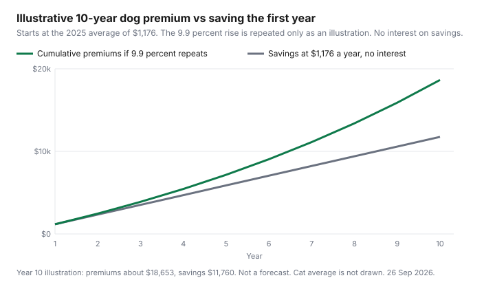

Pets · Canada
Is Pet Insurance Worth It in Canada? A Premium-vs-Emergency-Fund Framework With 2025 Industry Data
The useful question is not which logo to buy. It is whether the premium you would pay, set beside a savings fund you will actually keep, fits the way your household already handles a big irregular bill. The averages below are Canadian dollars from the North American Pet Health Insurance Association’s 2026 State of the Industry highlights, which reflect the 2025 calendar year and were opened as a PDF on 26 Sep 2026. They are not a quote. They are not a ranking. No insurer is named, and nothing here is a recommendation to buy or to decline a policy. Read the contract, or read the clause guide before you treat an average as your price.
Disclosure: Pet insurance quote and comparison referral types are an offer type. Saving Optimizer may earn a commission if we later add a partner link. We do not currently claim a partnership with any insurer, broker, or comparison site. We do not rank plans and we do not name a best policy. Education only, not insurance advice. The wording you are offered is the contract.
Key takeaways
- NAPHIA’s 2025 Canadian average accident-and-illness premium is $1,176 for a dog and $601 for a cat. Per month, that is $98.00 and $50.08, with no increase assumed inside the year.
- Those two averages rose 9.9 percent and 9.1 percent from 2024. Accident-only averages fell. Insurance with embedded wellness rose faster than accident-and-illness, to $2,623 for dogs and $1,499 for cats.
- Canadian pet-insurance penetration in the highlights is 3.72 percent. The report does not publish a median claim, a premium by age, or a premium by breed.
- Five years of the 2025 dog accident-and-illness average, with no further increase, is $5,880. The same flat sum for a cat is $3,005. A repeating annual increase is illustrated on the chart and labelled as illustration.
- A fund only works if the cash stays put. Use the same parking decision as any other emergency balance, not a jar you spend in March.
What Canadians pay: NAPHIA 2025 average accident and illness premiums of about $1,176/yr for dogs and $601/yr for cats
The highlights report is dated in the footer 21 Jun 2026. It says the data represent about 99 percent of written pet health insurance premium in the United States and Canada, compiled by Willis Towers Watson from a member survey plus public information. Dollar amounts are in the country’s currency. The Canadian premium table is therefore in Canadian dollars. In-force premium and insured-pet counts are as at 31 Dec 2025. The premium page carries the report’s first footnote: member-contributed data plus public sources, aggregated, with actuarial inferences where the compilers needed them. Treat the averages as industry benchmarks, not as the price on your screen tomorrow.
Accident-and-illness, the product the report describes as accident benefits plus illnesses such as cancer, infections, and digestive problems, averages $1,176 for a dog and $601 for a cat in 2025. Accident-only, described with examples that include foreign-body ingestion, lacerations, motor vehicle accidents, ligament tears, and poisoning, averages $251 for a dog and $212 for a cat. Insurance with embedded wellness, described as comprehensive plans that may include vaccinations, early screening, nutrition consultations, dental care, and similar items, averages $2,623 for a dog and $1,499 for a cat. The word “may” is the report’s. Dental on a wellness average is not a promise that your dental invoice is covered. That sentence lives in the wording.
The same highlights put Canada’s in-force gross written premium at $660.5 million at year-end 2025, up 13.1 percent. Insured dogs were about $556.3 million, 84.2 percent of that premium. Insured cats were about $104.2 million, 15.8 percent. Total insured pets in force rose 3.9 percent, the smallest increase in the five years shown. Dogs were 73.6 percent of insured pets and cats 26.4 percent. Penetration, using a Statista May 2026 pet-population figure the report cites, is 3.72 percent of an estimated 17.3 million pets, with dogs at 5.64 percent of 8.4 million and cats at 1.91 percent of 8.9 million. Most Canadian dogs and cats are uninsured on that arithmetic. An average premium is the price among those who are in a policy, not a bill the country has already decided you should pay. Ontario accounted for 36.2 percent of insured pets and 37.6 percent of premium in the member-only provincial table. That is a distribution, not a reason to assume your quote matches the national average.
Why premiums rise (about +9–10% in 2025) and with age
The 9 to 10 percent band in the heading is the accident-and-illness change: dogs up 9.9 percent, cats up 9.1 percent, from 2024 to 2025. The rest of the Canadian table does not march in lockstep. Accident-only dogs fell 6.9 percent, to $251, and accident-only cats fell 4.4 percent, to $212. Wellness dogs rose 12.6 percent and wellness cats rose 21.9 percent. Earlier accident-and-illness increases on the same table were larger: dogs 13.7 percent in 2024 and 15.6 percent in 2023; cats 12.6 percent in 2024 and 14.3 percent in 2023. The report also says Canadian premium growth overall was 13.1 percent in 2025, against 3.9 percent growth in insured pets, which is the industry’s way of saying the average price rose faster than the headcount. None of those rates is a forecast for your renewal.
Age is the part the highlights do not quantify. There is no table of premiums by birthday. There is no sentence that names a percent increase at a given age. If a quote or a renewal changes because the animal is older, the evidence is that document, not this report. The renewal guide is the household habit of reading the offer before it renews. It was written for home and auto habits, and the habit transfers: get the number in writing, and do not argue with an average when your page shows a different one. Switching after a condition exists is a separate risk, covered in the policy guide, not a trick that freezes the 2025 average.
Self-insuring: how big a vet emergency fund must be, and how long it takes to build
NAPHIA’s highlights do not publish a median Canadian claim, so this page will not announce that the fund “must” equal a typical surgery. The only emergency span opened beside the premium report is on the Competition Bureau’s 30 Oct 2024 market piece, which says emergency trips to the veterinarian can cost an additional $215 to $1,615 per year. That sentence sits beside older Ontario Veterinary Medical Association annual totals, not beside the 2025 cost sheets. It is an annual additional range in the Bureau’s summary, not one invoice and not a 2025 price list. A single year of the 2025 dog accident-and-illness average, $1,176, falls inside that $215 to $1,615 span. A single year of the cat average, $601, also falls inside it. That comparison does not prove a policy pays the bill. It shows how the published premium sits against the only annual emergency range this draft opened.
How long the fund takes is arithmetic on the premium you would have paid, saved instead, with no investment return assumed. Saving $1,176 a year reaches $1,176 in twelve months, which is inside the Bureau’s annual range and short of a second year of the same range if the top of that range repeated. Saving $601 a year reaches the cat premium in twelve months. Reaching the top of the Bureau’s range, $1,615, at the dog premium’s pace takes $1,615 divided by $1,176, or about 1.4 years of deposits, if you do not spend the balance. The sinking-fund guide is the envelope. The savings-account guide is the parking. A fund that is raided for a non-vet bill is not self-insurance. It is a delay. The 2025 canine cost sheet’s adult total is a different pile of money, routine care plus an insurance estimate, and it should not be confused with this emergency balance. Routine lines are going to be spent. The emergency fund is the amount you hope not to spend.
Break-even scenarios: young mixed breed vs a breed prone to costly conditions
The highlights do not price a young mixed breed against a breed associated with expensive conditions. They do not price age bands. Using the national average as “the mixed-breed price” would invent a discount the report does not print. The honest version of this scenario is a pair of questions you ask the quote, then a pair of sums you can already do with the averages. Ask whether the price changes with age, and whether hereditary or congenital conditions are excluded or capped. Those answers, not the species average, are what separate one dog from another. The policy guide is where those clause types are listed. This report’s accident examples include ligament tears inside accident benefits. Whether a particular ligament claim is paid is the wording and the waiting period, not the breed’s reputation.
What the averages can support is a flat five-year sum, and a labelled illustration if last year’s percent repeated. Five times $1,176 is $5,880. Five times $601 is $3,005. Five times the accident-only averages is $1,255 for a dog and $1,060 for a cat. Five times the wellness averages is $13,115 for a dog and $7,495 for a cat. If the Bureau’s $215 to $1,615 additional emergency range repeated for five years, the span would be $1,075 to $8,075. The flat dog accident-and-illness total, $5,880, sits inside that repeated span. The flat cat total, $3,005, also sits inside it. The wellness dog total, $13,115, sits above it. This is arithmetic on two published figures, not a prediction that your dog will have an emergency every year, and not a claim that the Bureau’s range is a covered loss. A year with no claim makes the premium look expensive. A year at the top of a real invoice can make the fund look small. The report does not tell you which year you will get.
| Product | Dog, 2025 | Cat, 2025 | Change, dog / cat | Five years, flat |
|---|---|---|---|---|
| Accident only | $251 | $212 | −6.9% / −4.4% | $1,255 / $1,060 |
| Accident and illness | $1,176 | $601 | +9.9% / +9.1% | $5,880 / $3,005 |
| With embedded wellness | $2,623 | $1,499 | +12.6% / +21.9% | $13,115 / $7,495 |
| Penetration | 5.64% of dogs | 1.91% of cats | 3.72% of pets overall | Not a premium |
| Comparison | Dog | Cat |
|---|---|---|
| 2025 accident-and-illness average | $1,176 | $601 |
| Five years, no increase | $5,880 | $3,005 |
| Bureau range times five, if it repeated | $1,075 to $8,075 | $1,075 to $8,075 |
| Where the flat premium sits | Inside that repeated span | Inside that repeated span |
| Months to save one year of premium, at that same premium, no interest | 12 months to $1,176 | 12 months to $601 |

Accident-only, accident and illness, and wellness add-ons compared
The price gaps are the comparison this report will support. Dog accident-and-illness at $1,176 is $925 a year more than dog accident-only at $251. Cat accident-and-illness at $601 is $389 more than cat accident-only at $212. Dog wellness at $2,623 is $1,447 more than dog accident-and-illness. Cat wellness at $1,499 is $898 more than cat accident-and-illness. Those gaps are premiums, not benefits. Accident-only, on the report’s description, is the accident list. Illnesses such as cancer and infections are the step up to accident-and-illness. Wellness “may” include vaccines, screening, nutrition consultations, and dental. The Ontario 2025 adult dental line on the cost sheets is $1,320 for a dog and $1,320 for a cat. The extra wellness premium for a dog, $1,447, is larger than that one dental line. The extra wellness premium for a cat, $898, is smaller than that one dental line. That arithmetic does not mean wellness pays the dental bill. It means you should not buy the more expensive average unless the wording you were given actually covers the invoices you already know you will face, such as a dental estimate you have in hand.
Endorsements and riders are mentioned in the report’s product list, including wellness or cancer riders, and they are not given Canadian average prices on the page opened here. If a quote adds a rider, price the rider alone. Do not assume it costs the gap between the columns above. The quote spreadsheet is the place to lock the same deductible, the same reimbursement, and the same limit before you sort on monthly price. A cheaper accident-only premium that excludes the illness you are worried about is not the same product as the $1,176 average.
Decision checklist before you buy
Work the list on paper. The average is only step one.
- Write the quoted annual premium next to the NAPHIA average for that species and product. A large gap is a question, not a bargain badge and not a rip-off badge.
- Name the product: accident-only, accident-and-illness, or wellness. Use the report’s descriptions only as a glossary. The wording wins.
- Find the deductible type, the reimbursement percent, the annual or per-condition limit, the waiting periods, and the pre-existing definition. The policy guide is the reading order.
- Ask what happens to the premium at the next birthday. The highlights do not answer that.
- Decide the fund you will hold if you decline. One year of the quoted premium, parked and not spent, is the minimum honest alternative. The Bureau range is context, not your target balance.
- Check the renewal habit on the annual review list so a pet policy does not auto-renew in a month you meant to compare.
- If you use a quote or comparison referral later, it is an offer type under the disclosure. It is not a ranking, and it is not this page’s advice to buy.
Sources & date stamps
- NAPHIA, 2026 State of the Industry Report highlights, footer dated 21 Jun 2026, reflecting the 2025 calendar year. Opened 26 Sep 2026. Canadian premiums, growth rates, penetration, gross written premium, and product descriptions as cited. Currency note: Canadian figures in Canadian dollars. Premium page uses the report’s footnote on member data plus public sources. Provincial shares use the member-only footnote. No insurer is named. No age or breed premium table was in the highlights.
- Five-year flat products: $251×5, $212×5, $1,176×5, $601×5, $2,623×5, $1,499×5. Monthly accident-and-illness: $1,176÷12 = $98.00; $601÷12 = $50.08. Chart: illustrative repeat of the 9.9 percent dog accident-and-illness change, not a forecast.
- Competition Bureau, “Pets, vets and meds,” 30 Oct 2024. Additional emergency trips described as $215 to $1,615 per year, in a paragraph beside older OVMA annual totals. Not the 2025 cost sheets. Five times that range is $1,075 to $8,075, labelled as repetition, not a prediction.
- A median Canadian claim, a required fund size, and breed-specific premiums were not in the highlights. They are omitted.
Frequently asked questions
How much does pet insurance cost in Canada?
NAPHIA’s highlights for the 2025 calendar year, opened 26 Sep 2026, put the Canadian accident-and-illness average at $1,176 a year for dogs and $601 for cats. That is $98.00 and $50.08 a month if you simply divide by twelve. Accident-only averages are $251 and $212. Averages with embedded wellness are $2,623 and $1,499. These are industry averages in Canadian dollars, not your quote, and penetration was 3.72 percent of pets.
Is it better to save instead of buying pet insurance?
The highlights do not answer that. They do not publish a median claim you can beat. Saving the dog accident-and-illness average sets aside $1,176 in a year, or $5,880 in five years if the price never rises and you never spend it. The same flat sums for a cat are $601 and $3,005. The Competition Bureau’s 30 Oct 2024 page describes additional emergency trips of $215 to $1,615 a year, beside older cost estimates. A fund you spend on something else is not a substitute. Whether insurance is the better tool is the wording and your cash, not a ranking on this page.
Why do premiums rise every year?
They do not, in every product, in the one year this table shows. From 2024 to 2025, Canadian accident-and-illness averages rose 9.9 percent for dogs and 9.1 percent for cats. Accident-only averages fell 6.9 percent and 4.4 percent. Wellness averages rose 12.6 percent and 21.9 percent. Overall Canadian premium volume rose 13.1 percent while insured pets rose 3.9 percent. The report does not publish an age table, so a birthday increase is whatever the renewal says. Repeating 9.9 percent on the chart is an illustration, not a promise that next year matches 2025.
What's the difference between accident-only and accident and illness?
In NAPHIA’s own glossary, accident-only is illustrated with foreign-body ingestion, lacerations, vehicle accidents, ligament tears, and poisoning. Accident-and-illness adds illnesses such as cancer, infections, and digestive problems on top of accident benefits. The 2025 Canadian price gap is $925 a year for dogs ($1,176 minus $251) and $389 for cats ($601 minus $212). Those descriptions are the report’s examples. Your policy’s definitions and exclusions decide a claim. Ligament tears appearing in the accident example does not delete a waiting period in the wording.
Is wellness coverage worth adding?
The highlights do not score it. They price insurance with embedded wellness at $2,623 for dogs and $1,499 for cats, which is $1,447 and $898 above the accident-and-illness averages. The report says those plans may include vaccines, screening, nutrition consultations, and dental care. “May” is not a coverage grant. The 2025 Ontario adult dental line on the veterinary association sheets is $1,320, which is a different document. Compare the rider you were actually offered with the invoices you already expect. This page does not name a plan that wins that comparison.